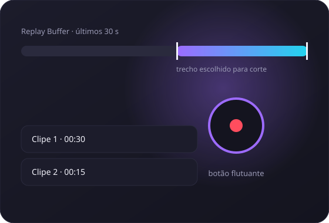
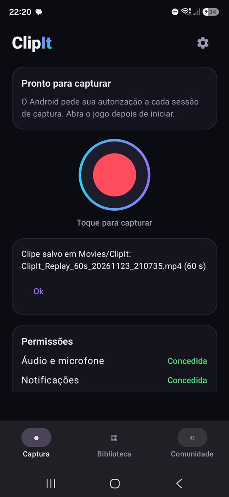
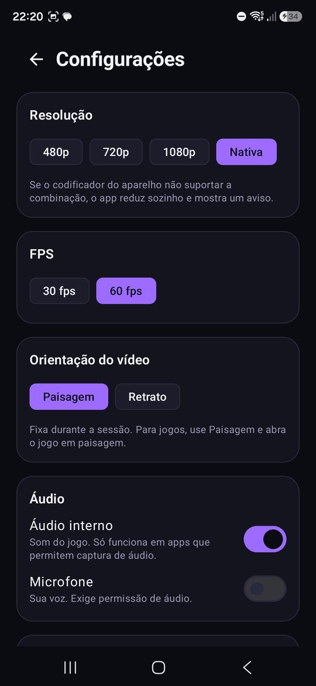
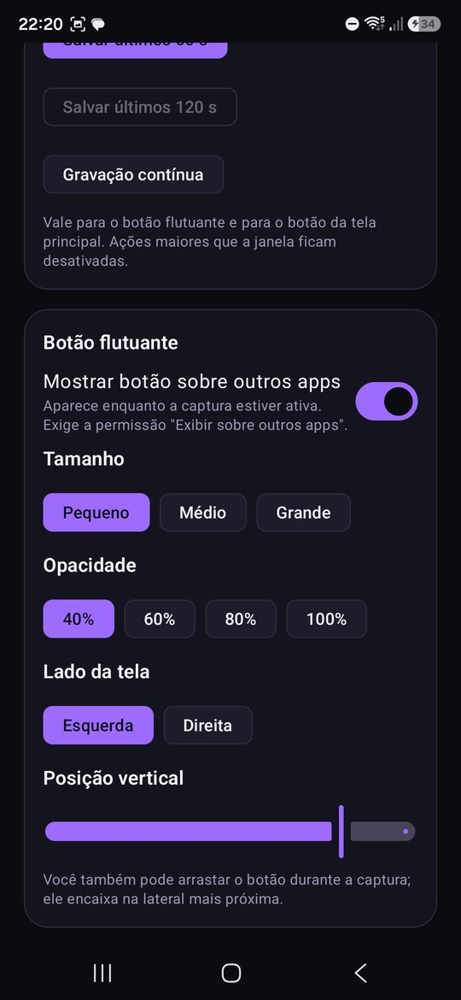
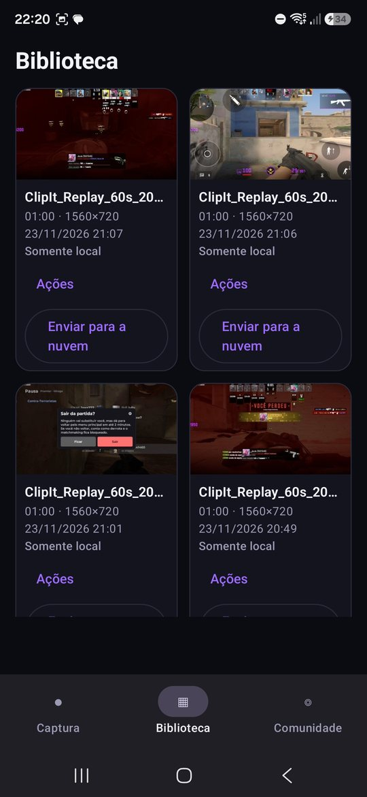

Comunidade
Feed de clipes publicados, perfis, curtidas, comentários, seguidores e denúncias. Ainda não está disponível para uso público.
Para Android · gravação de tela
O ClipIt grava a tela do seu aparelho em segundo plano e salva os últimos segundos com um toque no botão flutuante. Depois, reproduza, corte e compartilhe, tudo no próprio celular.

Funcionalidades
Recursos disponíveis no app. Nada aqui depende de nuvem ou de conta.
Grava a tela inteira com áudio interno do sistema (Android 10 ou superior) e microfone opcional. Resolução de 480p a nativa, com 30 ou 60 quadros por segundo.
Mantém a janela recente de gravação, de 15 a 120 segundos. Salve os últimos trechos quando algo acontecer, ou use a gravação contínua para registrar uma sessão inteira.
Aparece sobre outros apps enquanto a captura está ativa. Arraste para mudar de lugar; ele encaixa na lateral da tela. Tamanho, opacidade, lado da tela e posição vertical podem ser ajustados.
Os clipes ficam na pasta Movies/ClipIt, visíveis para a galeria. Dentro do app, você reproduz, renomeia, compartilha e exclui cada um.
Escolha o trecho que quer manter e exporte só esse intervalo como um novo arquivo. O editor faz corte; não há outros recursos de edição de vídeo.
Demonstração
Capturas de tela do aplicativo, sem alterações além da ocultação do nome da conta.




Recursos futuros
Estes recursos estão em desenvolvimento e não funcionam para o público ainda. Não há data prevista.
Feed de clipes publicados, perfis, curtidas, comentários, seguidores e denúncias. Ainda não está disponível para uso público.
Envio de clipes para uma conta na nuvem. Ainda não está disponível para uso público e depende de configuração de serviço.
Download
APK de teste (depuração) do ClipIt, hospedado no MediaFire. Não é uma versão de loja.
Requisito: Android 10 ou superior. Como o APK não vem da loja, permita a instalação de fontes desconhecidas nas configurações do aparelho. O MediaFire pode exibir um aviso antes do download.